Open this page to visually review every screenshot. Structural QA passed; semantic visual review is for the human/vision reviewer.
Explain where a new user starts — Existing Avatar → Tạo video từ Avatar có sẵn; new person → Tạo AI Avatar mới
Choose an existing Avatar — Pick a READY avatar card from the library inline
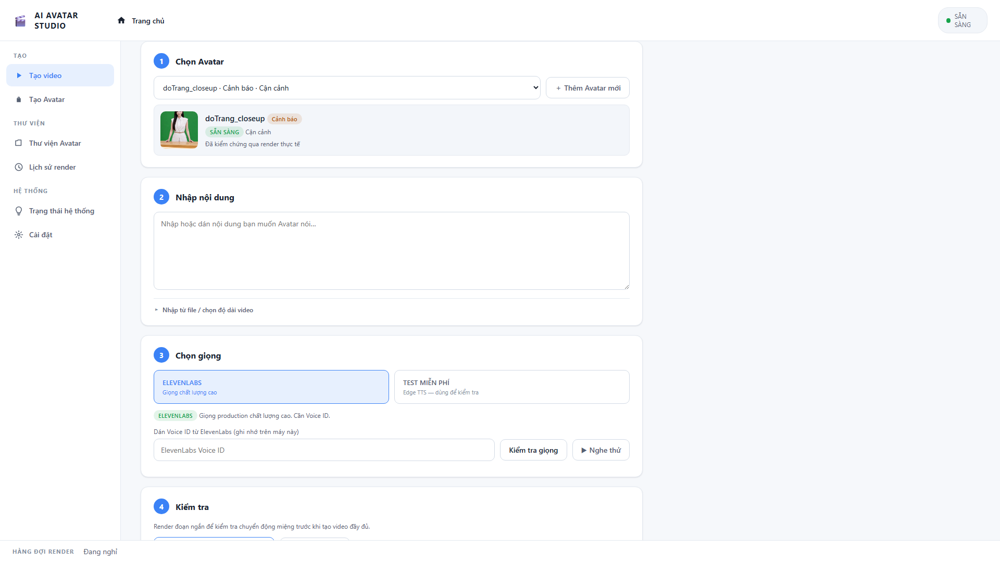
Enter the script the Avatar will speak — Paste/type text; advanced import (TXT/DOCX) is secondary
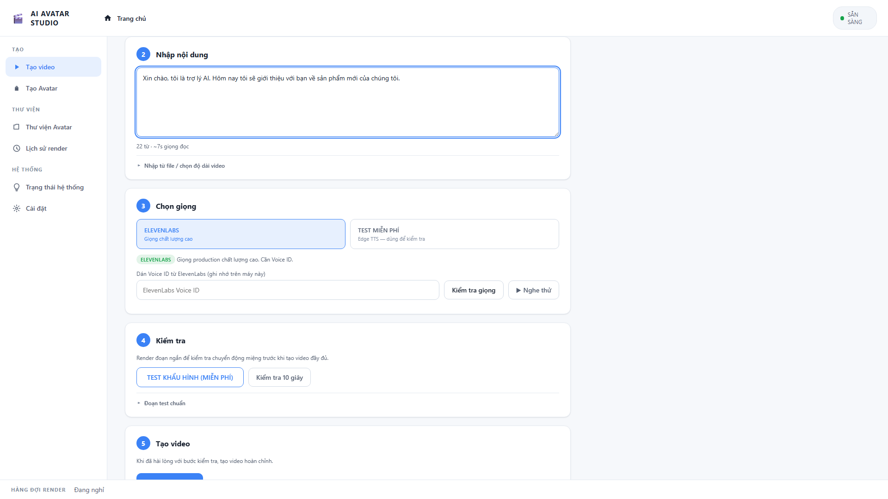
Choose voice: ElevenLabs vs free Edge TTS — ElevenLabs = high quality; TEST MIỄN PHÍ = free Edge TTS test
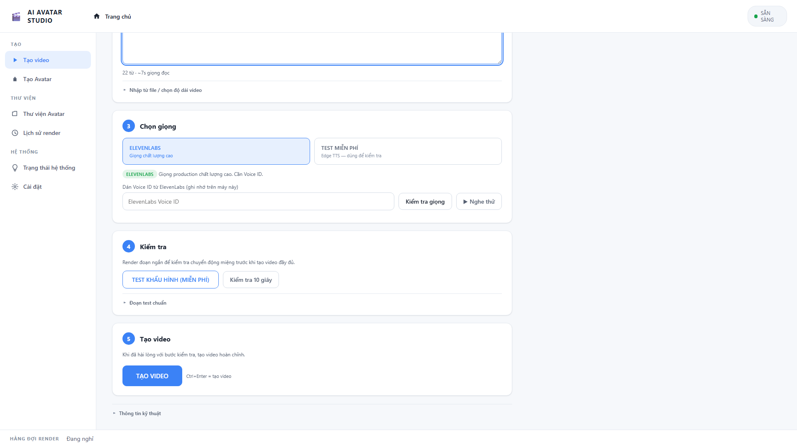
Free mouth-motion test before final render — Render a short clip to check lip sync without spending quota

Create the final production video — TẠO VIDEO CTA — does not start a render in this capture
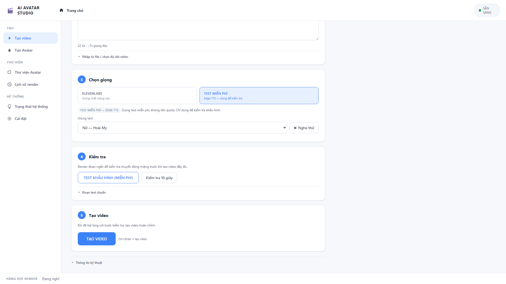
Overview of the 5-step create-Avatar flow — Video mẫu → Yêu cầu video → Upload → Kiểm tra → Tạo Avatar
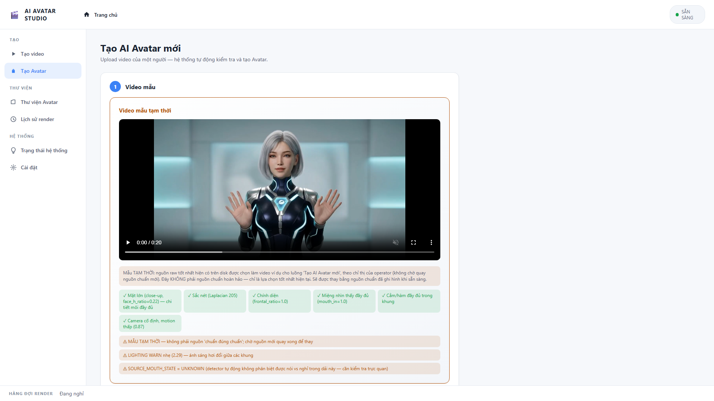
Source video requirements with icons — 30–60s, 9:16, mặt đủ lớn, gần chính diện, không nói, đủ môi+cằm, camera cố định, ánh sáng
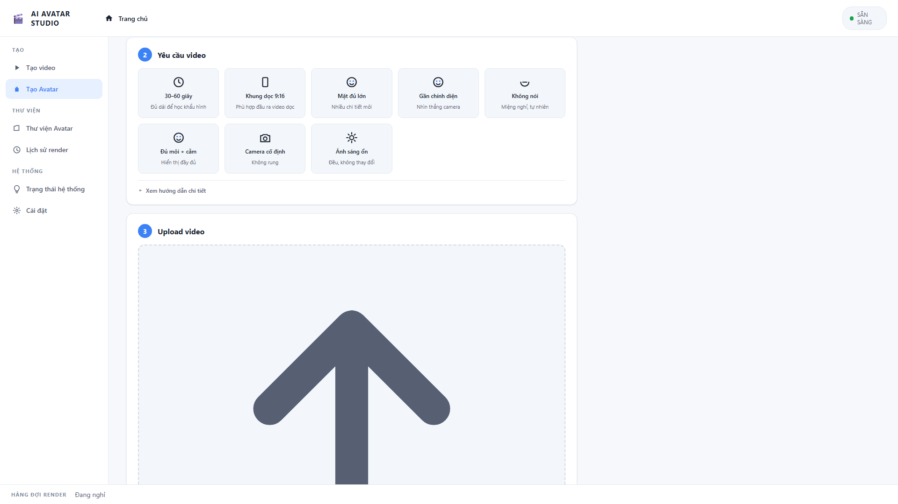
Large dropzone to upload source video — Simple pre-upload state; no file uploaded for this shot
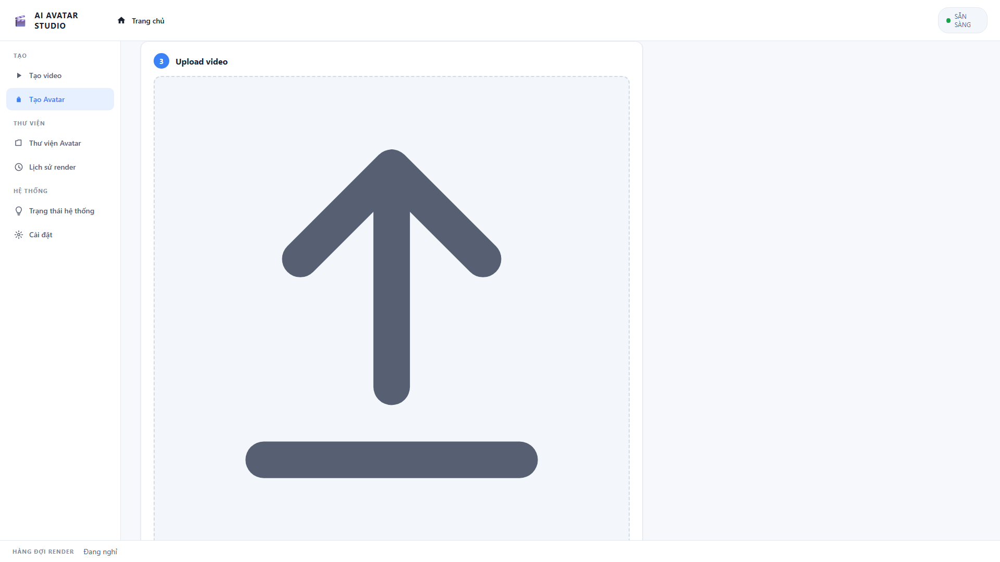
Automatic source quality check (Tốt/Cần lưu ý) — Real validator output from the app's own bundled sample video; no avatar created, no GPU render
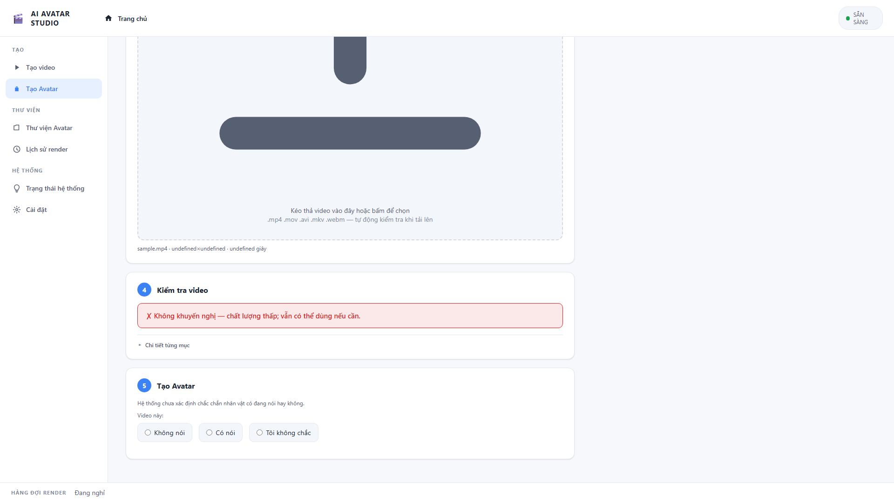
Name and create the new Avatar (pre-launch state) — TẠO AVATAR CTA visible; advanced to prepare via continue button; prepare NOT launched
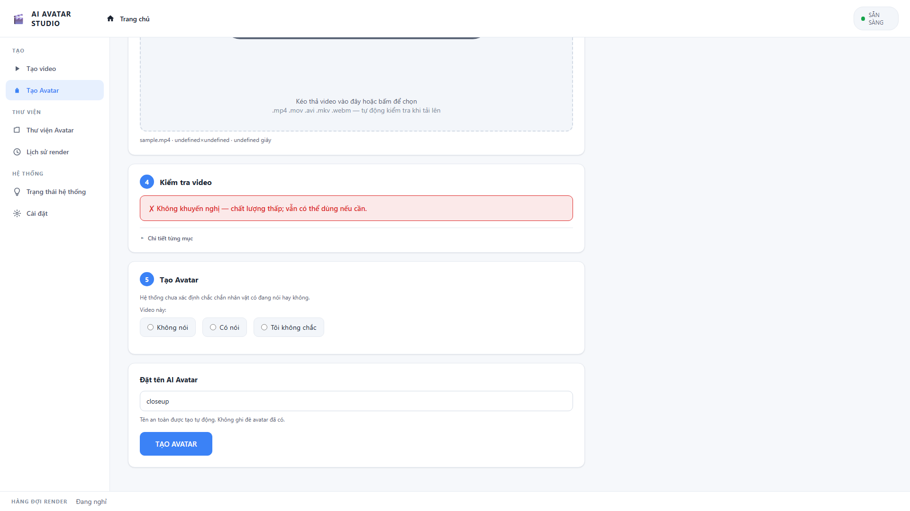
Browse real Avatar cards with quality status — Thumbnail, name, quality label, Chọn Avatar, Xem chi tiết; details closed
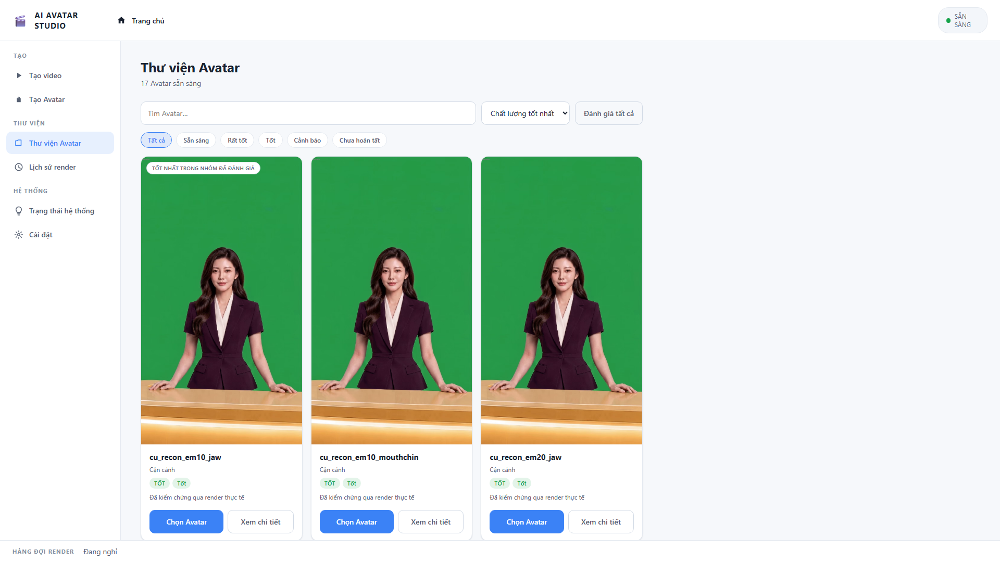
Human-readable source/prepared/production detail — doTrang_closeup detail modal; advanced technical section COLLAPSED
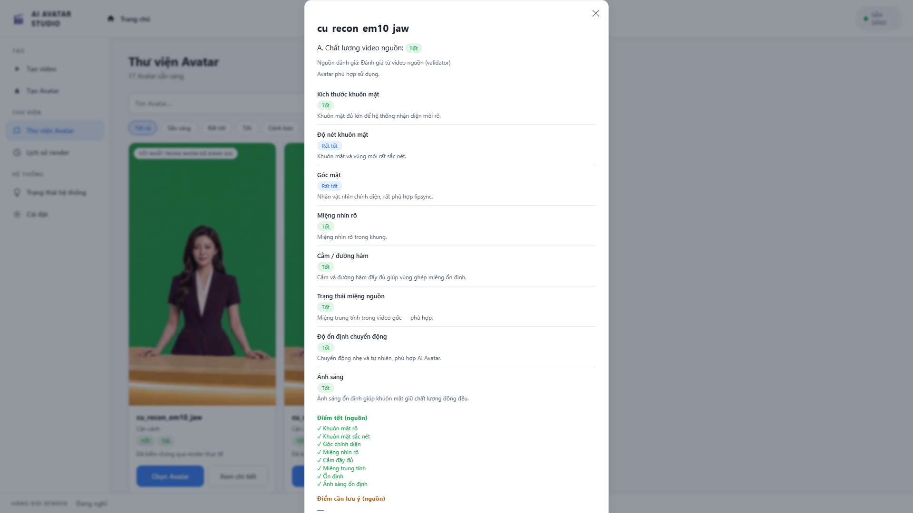
Render queue state (idle) — IDLE_QUEUE — footer queue bar shows 'Đang nghỉ'; no active jobs
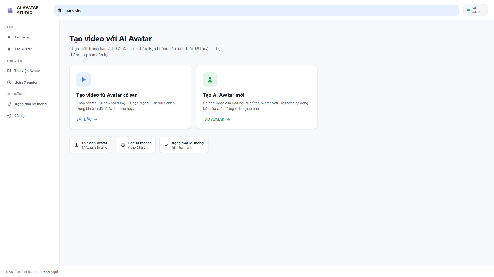
Visual render history with TEST vs VIDEO HOÀN CHỈNH — Thumbnail, job, avatar, voice, duration, status, Xem video, Tải video
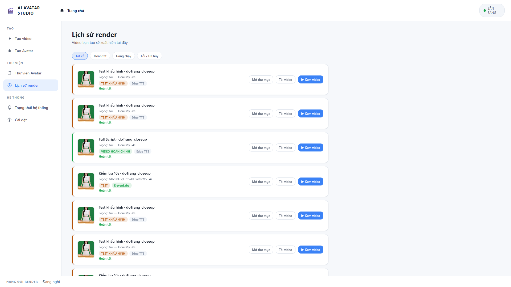
System readiness summary; advanced details collapsed — HỆ THỐNG SẴN SÀNG; ✓ AI Avatar / GPU / ElevenLabs / Edge TTS
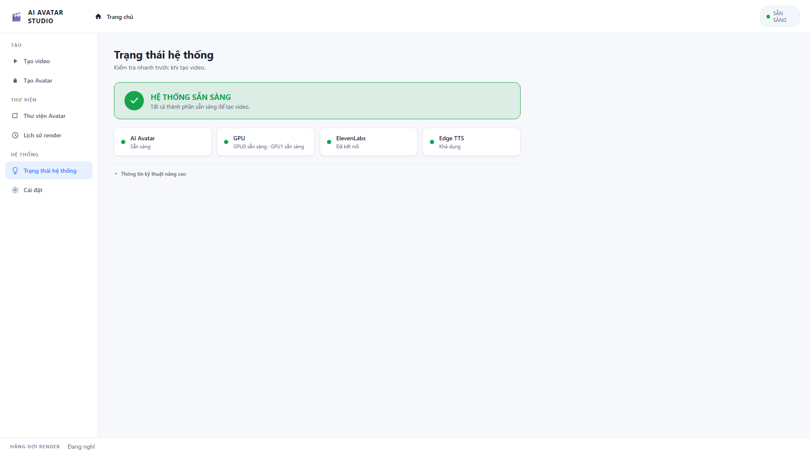